Section A. Multiple Choice
🧩 A1 — характеризація PMF
Яка з відповідей правильно характеризує функцію ймовірностей (PMF)?
(A) \(\int_{-\infty}^{\infty} p(x)\,dx = 1\) і \(p(x) \ge 0\) .
(B) \(p(x) \ge 0\) для всіх \(x\) і \(\sum_{\text{all } x} p(x) = 1\) .
(C) \(p(x)\) — неперервна функція \(x\) .
(D) \(p(x)\) може перевищувати 1 для окремих \(x\) .
✅ A1 — розв’язання
PMF описує дискретну величину: умови нормування та невід’ємності формулюються через суму .
— формула PDF (інтеграл).
— PMF взагалі визначена лише на зліченній множині точок.
— для PMF \(p(x) = P(X = x) \le 1\) завжди.
Ключове протиставлення PMF vs PDF: сума проти інтеграла. Підкреслити: «ймовірність у точці» має сенс лише для дискретних. Типова помилка — обрати (A) через звичку до інтегралів.
🧩 A2 — \(\operatorname{Var}(2X + 5)\)
\(E[X] = 3, \operatorname{Var}(X) = 4\) . Знайти \(\operatorname{Var}(2X + 5)\) .
(A) 8 (B) 13 (C) 16 (D) 21
✅ A2 — розв’язання
Властивість дисперсії: \(\operatorname{Var}(aX + b) = a^2 \operatorname{Var}(X)\) .
\[
\operatorname{Var}(2X + 5) = 2^2 \cdot 4 = 16.
\]
Зсув \(+5\) не впливає на розкид; масштаб \(\times 2\) збільшує дисперсію у 4 рази .
Дві типові помилки: (1) помножити дисперсію на 2, забувши квадрат; (2) додати щось через +5. Нагадати інтуїцію: константа зсуває весь розподіл, не міняючи форму. Можна намалювати на дошці.
🧩 A3 — стандартний нормальний: яке твердження ХИБНЕ?
\(Z \sim \mathcal{N}(0, 1)\) . Яке з тверджень FALSE ?
(A) \(P(Z > 0) = 0.5\) (B) \(P(Z = 0) = 0.5\)
(C) \(E[Z] = 0, \operatorname{Var}(Z) = 1\) (D) Розподіл симетричний навколо 0
✅ A3 — розв’язання
Для неперервної випадкової величини \(P(Z = c) = 0\) для будь-якого фіксованого \(c\) .
Отже \(P(Z = 0) = 0\) , а не \(0.5\) .
✓ за симетрією.
✓ — означення \(\mathcal{N}(0, 1)\) .
✓ — щільність \(\varphi(z) = \varphi(-z)\) .
Принциповий момент: для неперервної величини маса однієї точки = 0. Часто плутають із дискретним випадком, де \(P(X = c)\) — повноцінна ймовірність. Зв’язати з B3 — однакова ідея.
🧩 A4 — нерівність Маркова
Для невід’ємної \(X\) з \(E[X] = \mu\) і \(a > 0\) :
(A) \(P(X \ge a) \le \dfrac{\mu}{a}\) (B) \(P(X \le a) \le \dfrac{\mu}{a}\)
(C) \(P(|X - \mu| \ge a) \le \dfrac{\operatorname{Var}(X)}{a^2}\) (D) \(P(X \ge a) = e^{-a/\mu}\)
✅ A4 — розв’язання
Класичне формулювання Маркова: для \(X \ge 0\) та \(a > 0\)
\[
P(X \ge a) \le \frac{E[X]}{a} = \frac{\mu}{a}.
\]
— це нерівність Чебишева (центрований варіант).
— формула для виживання Exp-розподілу, а не загальна нерівність.
Виділити дві умови Маркова: \(X \ge 0\) та \(E[X] < \infty\) . Без невід’ємності нерівність не діє. Чебишева (C) — корисно згадати як «наступний рівень»: дає кращу межу, але потребує дисперсії. Зв’язок із P6.
🧩 A5 — \(\operatorname{Var}\) для Binomial
\(X \sim \mathrm{Binomial}(n = 20, p = 0.30)\) . Знайти \(\operatorname{Var}(X)\) .
(A) 0.21 (B) 0.30 (C) 4.2 (D) 6
✅ A5 — розв’язання
З довідника: \(\operatorname{Var}(X) = n p (1 - p)\) .
\[
\operatorname{Var}(X) = 20 \cdot 0.30 \cdot 0.70 = 4.2.
\]
Зауваження: \(np = 6\) — це середнє , \(p(1 - p) = 0.21\) — дисперсія одного Бернуллі.
Студенти часто плутають \(np\) (середнє) із дисперсією. Підказка: «середнє росте з \(n\) , дисперсія — теж, але через множник \(p(1-p)\) ». На дошці розкласти \(X = \sum X_i\) де \(X_i\) — Бернуллі, і скористатись адитивністю дисперсії.
📊 A5 — Binom(20, 0.3) у R
<- 20 ; p <- 0.30 tibble (k = 0 : n, pmf = dbinom (0 : n, n, p)) |> ggplot (aes (k, pmf)) + geom_col (fill = blue, alpha = 0.7 , width = 0.7 ) + geom_vline (xintercept = n * p, color = red, linetype = "dashed" ) + annotate ("text" , x = n* p + 0.4 , y = max (dbinom (0 : n, n, p)) * 0.9 ,label = "E[X] = 6" , hjust = 0 , color = red) + scale_x_continuous (breaks = seq (0 , n, 2 )) + labs (title = "Binom(20, 0.3): Var = 4.2, SD ≈ 2.05" ,x = "k" , y = "P(X = k)" )
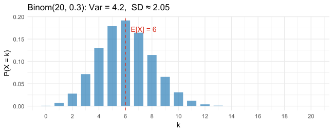
🧩 A6 — memoryless property
Для \(X \sim \mathrm{Exp}(\lambda)\) і будь-яких \(s, t > 0\) :
(A) \(P(X > s + t \mid X > s) = P(X > t)\)
(B) \(E[X^2] = (E[X])^2\)
(C) \(\operatorname{Var}(X) = E[X]\)
(D) \(P(X > s + t) = P(X > s) + P(X > t)\)
✅ A6 — розв’язання
Memoryless: знання, що чекали \(s\) часу, не змінює розподілу подальшого очікування.
\[
P(X > s + t \mid X > s)
= \frac{e^{-\lambda(s+t)}}{e^{-\lambda s}}
= e^{-\lambda t} = P(X > t).
\]
хибно — це твердження дало б \(\operatorname{Var}(X) = 0\) .
випадково вірне для \(\mathrm{Exp}(1)\) , але не загалом.
хибно — ймовірності не додаються таким чином.
Memoryless — унікальна риса Exp (і дискретного geometric). Інтуїція: «час очікування автобуса не знає, скільки ви вже чекали». Підготувати до P5(d), де ця ж властивість зустрінеться у задачі про доставку.
🧩 A7 — CLT
CLT: величина \(\dfrac{\bar X_n - \mu}{\sigma/\sqrt{n}}\) збігається за розподілом до:
(A) \(\mathcal{N}(\mu, \sigma^2)\) (B) \(\mathcal{N}(0, 1)\) (C) \(\mathrm{Unif}(0, 1)\) (D) \(\mathrm{Exp}(1)\)
✅ A7 — розв’язання
CLT стандартизує середнє: ділення на \(\sigma/\sqrt{n}\) та віднімання \(\mu\) дає стандартний нормальний.
\[
\frac{\bar X_n - \mu}{\sigma/\sqrt{n}} \xrightarrow{d} \mathcal{N}(0, 1).
\]
Ключова деталь: вже стандартизована величина — тому збігається саме до \(\mathcal{N}(0, 1)\) , а не до \(\mathcal{N}(\mu, \sigma^2)\) . Відповідь (A) — типова пастка для тих, хто запам’ятав «CLT → нормальний», але не дивиться на знаменник.
🧩 A8 — найсильніший лінійний зв’язок
Який \(\rho\) вказує на найсильніший лінійний зв’язок?
(A) \(0.72\) (B) \(-0.91\) (C) \(0.50\) (D) \(0.01\)
✅ A8 — розв’язання
Сила лінійного зв’язку = \(|\rho|\) , знак — лише напрям.
\[
|{-0.91}| = 0.91 > 0.72 > 0.50 > 0.01.
\]
Від’ємний знак означає, що зі зростанням \(X\) величина \(Y\) спадає — і це найсильніший зв’язок із наведених.
Відповідь: (B) \(\rho = -0.91\) .
Знак vs сила — стандартна плутанина. Підкреслити: \(\rho = -0.91\) описує точки, що майже лежать на прямій з негативним нахилом. Зробити аналогію зі склянкою, яку перекидаєш: жорсткий механічний зв’язок є, просто оберненого знаку.
🧩 A9 — Баєс: high-risk applicant
5% високого ризику; модель ловить 90% true high-risk і хибно прапорить 10% low-risk. Дано «+»: \(P(\text{high} \mid +) \approx ?\)
(A) 0.05 (B) 0.32 (C) 0.50 (D) 0.90
✅ A9 — Баєс
\[
P(+) = 0.05 \cdot 0.90 + 0.95 \cdot 0.10 = 0.045 + 0.095 = 0.140.
\]
\[
P(\text{high} \mid +) = \frac{0.05 \cdot 0.90}{0.140} = \frac{0.045}{0.140} \approx 0.321.
\]
Відповідь: (B) ≈ 0.32.
⚠️ Класична base-rate fallacy : «90% чутливість» \(\neq\) «90% впевненості після +».
Найважливіший слайд секції. Пояснити числами: 95% «low-risk» × 10% FP = 9.5 false positives на 100 заявок, а true positives — лише 4.5. Тому posterior значно менше за чутливість. Підготувати до P1 (та сама ідея на спам-фільтрі).
📊 A9 — у R
<- 0.05 ; prior_l <- 0.95 <- 0.90 ; fpr <- 0.10 <- sens * prior_h + fpr * prior_l* prior_h / p_pos
🧩 A10 — Закон великих чисел
LLN гарантує, що при \(n \to \infty\) :
(A) \(\bar X_n \xrightarrow{p} \mu\)
(B) \(\bar X_n \xrightarrow{d} \mathcal{N}(0, 1)\)
(C) Окремі \(X_i\) наближаються до \(\mu\)
(D) \(S_n^2 \to 0\)
✅ A10 — розв’язання
LLN: середнє за вибіркою збігається за ймовірністю до істинного середнього .
— це CLT (про стандартизоване середнє).
— кожне окреме \(X_i\) залишається випадковим, не «прилипає» до \(\mu\) .
— навпаки, \(S_n^2 \to \sigma^2\) .
LLN — про середнє вибірки , не про окремі спостереження. Уточнити різницю: CLT каже як швидко і в якій формі \(\bar X_n\) наближається до \(\mu\) ; LLN — лише факт збіжності. Зв’язати з P10(d).
🧩 B1 — формула включень-виключень
Для будь-яких подій \(A, B\) : \(P(A \cup B) = P(A) + P(B) - P(A \cap B)\) .
✅ B1 — TRUE
Класична формула включень-виключень для довільних подій (без вимоги несумісності).
Якби події були несумісні , \(P(A \cap B) = 0\) і формула спрощується до адитивності.
Найшвидший слайд секції — формула знайома. Підкреслити: «мінус \(P(A \cap B)\) » з’являється, бо інакше перетин рахується двічі. Намалювати кола Венна, якщо є дошка.
🧩 B2 — Cov = 0 ⇒ незалежність?
Якщо \(\operatorname{Cov}(X, Y) = 0\) , то \(X\) і \(Y\) незалежні.
✅ B2 — FALSE
Незалежність \(\Rightarrow\) \(\operatorname{Cov} = 0\) , але не навпаки .
Контрприклад: \(X \sim \mathcal{N}(0, 1)\) , \(Y = X^2\) . Тоді \(\operatorname{Cov}(X, Y) = E[X^3] - E[X]E[X^2] = 0\) , але \(Y\) детерміновано залежить від \(X\) .
Виправлення: «Якщо \(X, Y\) незалежні , то \(\operatorname{Cov}(X, Y) = 0\) .»
Одна з улюблених пасток підручників. Cov ловить лише лінійний зв’язок — а \(Y = X^2\) це чиста нелінійність. На графіку парабола: видно структуру, але «середній нахил» = 0. Підкреслити: незалежність — сильніша умова.
📊 B2 — Cov(X, X²) = 0, але залежні
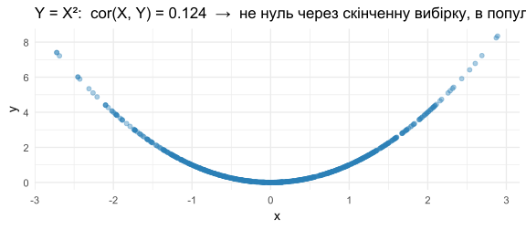
🧩 B3 — \(P(X = c) = 0\) ?
Для будь-якої неперервної \(X\) і константи \(c\) : \(P(X = c) = 0\) .
✅ B3 — TRUE
Маса однієї точки для неперервного розподілу дорівнює нулю — це наслідок інтегрального означення:
\[
P(X = c) = \int_c^c f(x)\,dx = 0.
\]
Саме тому в неперервних розподілах байдуже, \(\le\) чи \(<\) .
Зв’язок із A3. Обов’язково зазначити практичний наслідок: при розрахунках типу \(P(a < X < b)\) можна не перейматись межами. У дискретному ж випадку \(P(X \le 2)\) і \(P(X < 2)\) — різні величини.
🧩 B4 — дисперсія може бути від’ємною?
Дисперсія може бути від’ємною, якщо розподіл лівоскошений.
✅ B4 — FALSE
\[
\operatorname{Var}(X) = E[(X - \mu)^2] \ge 0.
\]
Це сподівання квадрата — не може бути від’ємним. Скошеність впливає лише на третій момент.
Виправлення: «Дисперсія завжди невід’ємна; \(\operatorname{Var}(X) = 0\) ⇔ \(X\) — стала майже напевне.»
Скошеність впливає на третій момент (асиметрію), а не на дисперсію. Швидке мнемонічне правило: «дисперсія — це квадрат». Можна попросити аудиторію назвати, який момент відповідає за «довжину хвоста» — це підготує до D4.
🧩 B5 — LLN
LLN гарантує \(\bar X_n \xrightarrow{p} \mu\) при \(n \to \infty\) .
✅ B5 — TRUE
Слабкий закон великих чисел (за умови \(E|X| < \infty\) ):
\[
\forall \varepsilon > 0: \quad P(|\bar X_n - \mu| > \varepsilon) \to 0.
\]
Сильний закон дає навіть майже напевну збіжність.
Не плутати з CLT. Пояснити «за ймовірністю» простими словами: для будь-якої заданої ε ймовірність «промахнутися» більше ε прямує до 0. Зв’язок із A10 і P10(d).
🧩 B6 — стандартизація нормального
Якщо \(X \sim \mathcal{N}(\mu, \sigma^2)\) , то \(\dfrac{X - \mu}{\sigma} \sim \mathcal{N}(1, 1)\) .
✅ B6 — FALSE
Стандартизація дає стандартний нормальний, а не зсунутий:
\[
\frac{X - \mu}{\sigma} \sim \mathcal{N}(0, 1).
\]
Швидка перевірка: \(E\!\left[\frac{X-\mu}{\sigma}\right] = 0\) , \(\operatorname{Var}\!\left[\frac{X-\mu}{\sigma}\right] = 1\) .
Виправлення: «\(\dfrac{X - \mu}{\sigma} \sim \mathcal{N}(0, 1)\) .»
Тут діє лінійна властивість моментів: віднімання \(\mu\) зсуває середнє до 0, ділення на \(\sigma\) робить дисперсію 1. Корисно показати кроки на дошці — це фундамент для всіх \(z\) -перетворень у Section D.
🧩 B7 — нерівність Маркова
Для \(X \ge 0\) і \(a > 0\) : \(P(X \ge a) \le \dfrac{E[X]}{a}\) .
✅ B7 — TRUE
Це класична нерівність Маркова. Умова невід’ємності \(X\) є критичною: для довільних \(X\) нерівність не виконується.
# Швидка перевірка для Exp(1/20): E[T] = 20, P(T > 100) <= 20/100 = 0.2 1 - pexp (100 , rate = 1 / 20 ) # 0.0067 — реальне 20 / 100 # 0.2 — межа Маркова (груба, але вірна)
Показати на цифрах, наскільки межа груба: 0.0067 vs 0.2 — у 30 разів. Маркова рідко близька до істини, але вона єдина, що працює, коли знаємо лише \(E[X]\) . Підготувати до P6.
🧩 B8 — кореляція
\(-1 \le \rho \le 1\) , і \(\rho = \pm 1\) ⇔ існує ідеальний лінійний зв’язок.
✅ B8 — TRUE
Це наслідок нерівності Коші–Шварца:
\[
|\operatorname{Cov}(X, Y)| \le \sqrt{\operatorname{Var}(X)\operatorname{Var}(Y)}.
\]
Рівність ⇔ \(Y = aX + b\) для деяких \(a \ne 0, b\) . Знак \(\rho\) збігається зі знаком \(a\) .
Підкреслити: «ідеальна» означає строго лінійна , а не «детерміністична». \(Y = X^2\) — детермінований зв’язок, але \(\rho \ne \pm 1\) . Зв’язок із B2 і A8. Якщо є час — нагадати, що \(\rho\) безрозмірне.
Section C. Validity Check
🧩 C1 — PMF: \(f(x) = \tfrac{x+1}{10}\) , \(x \in \{0,1,2,3\}\)
Чи валідна PMF?
Треба перевірити: (i) \(f(x) \ge 0\) , (ii) \(\sum f(x) = 1\) .
✅ C1 — розв’язання
Невід’ємність: \(f(0)=0.1,\ f(1)=0.2,\ f(2)=0.3,\ f(3)=0.4 \ge 0\) ✓
Сума:
\[
\sum_{x=0}^{3} \frac{x+1}{10}
= \frac{1 + 2 + 3 + 4}{10}
= \frac{10}{10} = 1 \;\checkmark
\]
<- 0 : 3 ; pmf <- (x + 1 ) / 10 all (pmf >= 0 ); sum (pmf)
Шаблон перевірки PMF: невід’ємність + нормування. Завжди дві умови. На R перевіряємо all(pmf >= 0) і sum(pmf). Цей слайд — мінімальний робочий приклад: добре спрацьовує як референс.
🧩 C2 — PMF: \(f(x) = \tfrac{x+1}{8}\) , \(x \in \{1,2,3\}\)
Чи валідна PMF?
✅ C2 — розв’язання
Невід’ємність: \(f(1)=0.25,\ f(2)=0.375,\ f(3)=0.5 \ge 0\) ✓
Сума:
\[
\sum_{x=1}^{3} \frac{x+1}{8}
= \frac{2 + 3 + 4}{8}
= \frac{9}{8} \neq 1 \;\text{✗}
\]
Висновок: НЕ валідна PMF — нормування порушено.
Щоб виправити: замінити знаменник на \(9\) .
<- 1 : 3 ; sum ((x + 1 ) / 8 ) # 1.125
Спосіб виправити — підказати студентам шукати правильний нормувальний коефіцієнт. У завданні C-бонус ця ж техніка: знайти \(k\) , щоб сума = 1. Підготовка до C-бонусу.
🧩 C3 — PDF: \(f(x) = 3x^2\) , \(0 \le x \le 1\)
Чи валідна PDF?
✅ C3 — розв’язання
Невід’ємність: \(3x^2 \ge 0\) для всіх \(x\) ✓
Інтеграл:
\[
\int_0^1 3x^2\,dx = \left[x^3\right]_0^1 = 1 \;\checkmark
\]
Висновок: Валідна PDF (це окремий випадок \(\mathrm{Beta}(3, 1)\) ).
integrate (function (x) 3 * x^ 2 , 0 , 1 )
1 with absolute error < 1.1e-14
Для PDF — інтеграл замість суми. Підкреслити паралель: PMF/\(\sum\) ↔︎ PDF/\(\int\) . \(\mathrm{Beta}(3, 1)\) — приклад «зростаючої щільності»: маса концентрується ближче до 1. Можна показати на графіку.
🧩 C4 — PDF: \(f(x) = 2x\) , \(0 \le x \le 2\)
Чи валідна PDF?
✅ C4 — розв’язання
Невід’ємність: \(2x \ge 0\) на \([0, 2]\) ✓
Інтеграл:
\[
\int_0^2 2x\,dx = \left[x^2\right]_0^2 = 4 \neq 1 \;\text{✗}
\]
Висновок: НЕ валідна PDF.
Щоб виправити: замінити коефіцієнт \(2\) на \(1/2\) (тоді \(\int_0^2 \tfrac{x}{2}\,dx = 1\) ).
integrate (function (x) 2 * x, 0 , 2 )
4 with absolute error < 4.4e-14
Звернути увагу: \(f(x) = 2x\) на \([0, 1]\) була б валідною (інтеграл = 1), але розширення меж до 2 ламає нормування. Це гарна нагода обговорити: PDF — це функція + носій , неможна змінювати одне без іншого.
🧩 C3 (бонус) — знайти \(k\)
\(f(x) = k\,x(4 - x), \quad x \in \{1, 2, 3\}\) . Знайти \(k > 0\) , щоб PMF була валідною.
✅ C3 (бонус) — розв’язання
Обчислимо суму без \(k\) :
\[
\sum_{x=1}^{3} x(4 - x) = 1\cdot 3 + 2\cdot 2 + 3\cdot 1 = 3 + 4 + 3 = 10.
\]
Умова \(k \cdot 10 = 1\) :
\[
\boxed{k = \frac{1}{10} = 0.1}.
\]
Перевірка невід’ємності: \(0.1 \cdot \{3, 4, 3\} = \{0.3, 0.4, 0.3\} \ge 0\) ✓ і сума \(= 1\) ✓.
<- 1 : 3 ; k <- 1 / sum (x * (4 - x))sum (k * x * (4 - x))
Алгоритм пошуку нормувальної константи: (1) обчислити суму без \(k\) , (2) узяти \(k = 1/\text{сума}\) , (3) перевірити невід’ємність. Та сама техніка для PDF, але з інтегралом. Корисний навик для всього курсу.
Section D. R Output Interpretation
Block D1 — Normal: пісенні стріми
Контекст: \(X \sim \mathcal{N}(\mu = 12, \sigma = 3.2)\) — щоденні стріми (тис.) укр. поп-пісень.
<- 12 ; sigma <- 3.2 pnorm (15.2 , mu, sigma) # 0.8413 pnorm (8.8 , mu, sigma) # 0.1587 pnorm (5.6 , mu, sigma, lower.tail = FALSE ) # 0.9772 qnorm (0.90 , mu, sigma) # 16.10
✅ D1(a) — pnorm(15.2) = 0.8413
\[
P(X < 15.2) = 0.8413 = 84.13\%.
\]
Близько 84% пісень отримують менше 15 200 стрімів на день. Поріг \(15.2 = \mu + \sigma\) — рівно \(z = 1\) .
Для продюсера: 15 200 — це верхня межа звичайного діапазону , не «хіт». Хіт мав би бути значно вищим (див. (d)).
pnorm — це CDF, тобто \(P(X < x)\) (для неперервної однаково \(\le\) ). Прив’язати до правила 68–95: \(\mu + \sigma\) → 84% маси ліворуч. Корисно записати чисельники в стилі \(0.5 + 0.34 = 0.84\) .
✅ D1(b) — правило 68–95–99.7
\[
P(8.8 < X < 15.2) = 0.8413 - 0.1587 = 0.6826.
\]
Інтервал \([8.8;\,15.2] = [\mu - \sigma;\ \mu + \sigma]\) — це класичне правило \(\mu \pm 1\sigma\) з емпіричного правила: 68.27% маси.
Емпіричне правило 68–95–99.7 — обов’язково запам’ятати на іспит. Підказати: \(\mu \pm 1\sigma \approx 68\%\) , \(\mu \pm 2\sigma \approx 95\%\) , \(\mu \pm 3\sigma \approx 99.7\%\) . Часто екзаменаційні задачі побудовані саме на цих числах.
✅ D1(c) — pnorm(5.6, lower.tail = FALSE) = 0.9772
\[
P(X > 5.6) = 0.9772 \quad \Leftrightarrow \quad P(X < 5.6) = 0.0228.
\]
\(5.6 = \mu - 2\sigma\) — це \(z = -2\) .
Для аналітика: лише ≈ 2.3% пісень отримують менше 5 600 стрімів — це сильний сигнал, що пісня серйозно недопрацьовує (нижні 2.5%).
lower.tail = FALSE — це \(P(X > x)\) , верхній хвіст. Тут \(5.6 = \mu - 2\sigma\) — це нижні 2.5%, тому правий хвіст 97.5%. Підкреслити: \(z = -2\) → дві сторони хвостів дають \(5\%\) (правило 95%).
✅ D1(d) — qnorm(0.90) = 16.10
Поріг «хіта» — 16 100 стрімів (90-й перцентиль).
Геометрично: 16.10 — це точка на осі \(x\) , лівіше від якої лежить 90% площі під кривою; справа залишається 10% (топ-10% — наші «хіти»).
Зауваження: \(16.10 > \mu + \sigma = 15.2\) , бо \(z_{0.9} = 1.282 > 1\) .
qnorm — обернена до pnorm (квантиль). Підкреслити пару p… ↔︎ q… — це шаблон для всіх розподілів R (pbinom/qbinom, pexp/qexp). Студенти часто плутають аргументи.
📊 D1 — візуалізація
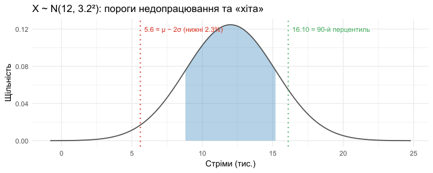
Block D2 — Binomial: бариста
\(X \sim \mathrm{Binomial}(10, 0.12)\) — к-сть неправильних замовлень з 10.
dbinom (0 , 10 , 0.12 ) # 0.2785 pbinom (1 , 10 , 0.12 ) # 0.6583 1 - pbinom (2 , 10 , 0.12 ) # 0.1087
✅ D2(a) — dbinom(0) = 0.2785
\[
P(X = 0) = 0.2785 \approx 27.85\%.
\]
Ймовірність того, що з 10 замовлень жодне не зіпсоване — це і є «ідеальна зміна».
Так , це і є ймовірність «доброї зміни» (нуль помилок). Лише ≈ 3 з 10 змін будуть бездоганними.
dbinom(k, n, p) — це density , тобто \(P(X = k)\) для дискретного. Не плутати з pbinom. Формула \(0.88^{10}\) також обчислюється напряму — корисно показати без R, аби студенти могли порахувати на іспиті.
✅ D2(b) — pbinom(1) = 0.6583
pbinom(q, ...) повертає \(P(X \le q)\) :
\[
P(X \le 1) = P(X = 0) + P(X = 1) = 0.6583.
\]
Подія: «не більше 1 помилки за 10 замовлень» . Включено обидва значення \(X = 0\) і \(X = 1\) .
Дуже частий ляп: студент пише \(P(X \le 1)\) , але в голові уявляє \(P(X < 1)\) . Для дискретних розподілів \(\le\) і \(<\) — РІЗНІ. Запам’ятати: pbinom(q) = \(P(X \le q)\) , з включенням точки.
✅ D2(c) — 1 - pbinom(2) = 0.1087
\[
1 - P(X \le 2) = P(X > 2) = P(X \ge 3) = 0.1087.
\]
Для менеджера: приблизно 10.9% змін матимуть 3 або більше неправильних замовлень — саме тоді він втручається. Тобто близько 1 з 9 змін потребує втручання.
Класична техніка для правого хвоста: \(1 - P(X \le k)\) . Підкреслити, що pbinom(2) включає 2, тому \(1 - P(X \le 2) = P(X \ge 3)\) , а не \(P(X > 2)\) — хоч для цілих це одне і те саме. Уважно з межами.
✅ D2(d) — різниця між двома
pbinom(1, ...) \(= P(X \le 1)\) — акумулює малі значення (низку успіхів).
1 - pbinom(2, ...) \(= P(X \ge 3)\) — доповнення від нижньої частини, дає верхній хвіст .
Чому величини різні (0.66 vs 0.11)? Бо при \(p = 0.12\) розподіл сильно скошений до малих значень: \(E[X] = np = 1.2\) . Маса сконцентрована в \(\{0, 1, 2\}\) , у хвості \(\ge 3\) маси мало.
Підсумкова інтуїція секції: при малому \(p\) Binomial скошений вправо (хоч і дискретний). Корисно зробити ескіз PMF на дошці. На P3 ці ж три обчислення повторюються — тут добра підготовка.
📊 D2 — PMF Binom(10, 0.12)
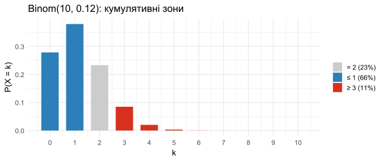
Block D3 — Exponential: доставка Bolt
\(T \sim \mathrm{Exp}(\lambda = 1/20)\) , \(E[T] = 20\) хв.
pexp (30 , rate = 1 / 20 , lower.tail = FALSE ) # 0.2231 pexp (40 , rate = 1 / 20 ) - pexp (10 , rate = 1 / 20 ) # 0.4712 qexp (0.50 , rate = 1 / 20 ) # 13.86 qexp (0.95 , rate = 1 / 20 ) # 59.91
✅ D3(a) — pexp(30, lower=F) = 0.2231
\[
P(T > 30) = e^{-30/20} = e^{-1.5} \approx 0.2231.
\]
Для голодного студента: близько 22.3% доставок займають довше 30 хвилин . Тобто кожна п’ята доставка — «довга».
Survival function для Exp: \(P(T > t) = e^{-\lambda t}\) . Це одна з небагатьох формул, яку студент може порахувати без R на іспиті, якщо пам’ятає \(e^{-1} \approx 0.37, e^{-1.5} \approx 0.22, e^{-2} \approx 0.14\) .
✅ D3(b) — pexp(40) - pexp(10) = 0.4712
\[
P(10 < T < 40) = P(T < 40) - P(T < 10).
\]
Подія: доставка прийшла в «прийнятному вікні» від 10 до 40 хвилин . ≈ 47% усіх доставок.
Стандартна техніка інтервалу: \(P(a < T < b) = F(b) - F(a)\) . Для неперервного байдуже, \(<\) чи \(\le\) (B3). Можна обчислити через survivor: \(e^{-0.5} - e^{-2}\) — наочніше.
✅ D3(c) — медіана < середнього
Медіана = 13.86 хв, середнє = 20 хв. Для Exp:
\[
\mathrm{Median} = \frac{\ln 2}{\lambda} \approx 0.693 / \lambda, \quad E[T] = 1/\lambda.
\]
Тобто завжди \(\mathrm{Median} = 0.693 \cdot E[T] < E[T]\) .
Що це означає про форму: розподіл скошений вправо (right-skewed). Кілька дуже довгих доставок «тягнуть» середнє вгору, а медіана залишається ближче до типового досвіду.
Загальне правило для скошених розподілів: mean > median (правоскошений), mean < median (лівоскошений). Це пряма зв’язка з D4 (зарплати). Підказати: коли «викид тягне в один бік», саме середнє рухається першим.
✅ D3(d) — qexp(0.95) = 59.91
\(X \approx 60\) хвилин — «95% доставок прибувають за 60 хв» .
Для клієнта о 2 ночі: з 5% ймовірністю чекати доведеться довше години . Якщо ви дуже голодні — є помітний ризик. Якщо ні — на 95% впораєтесь до 1 год.
# Перевіримо: median, mean, 95% qexp (0.5 , 1 / 20 ); 1 / (1 / 20 ); qexp (0.95 , 1 / 20 )
Підкреслити різницю між медіаною (≈14 хв), середнім (20 хв) і 95%-перцентилем (≈60 хв) — це 3× середнього. Класична скошеність Exp. У реальному житті це SLA: «95% доставок до 60 хв».
Block D4 — Salary stats + Normal
summary (salary)# Min. 1st Qu. Median Mean 3rd Qu. Max. # 2100 3800 4900 5600 6200 42000 sd (salary) # [1] 3200 pnorm (3800 , 5600 , 3200 ) # 0.2869 pnorm (9000 , 5600 , 3200 , lower.tail = F) # 0.1440
✅ D4(a) — форма розподілу
Mean (5600) > Median (4900) і Max (42 000) сильно віддалений від \(Q_3 = 6200\) .
Класичні ознаки сильної правої скошеності (right-skewed): кілька високооплачуваних топ-менеджерів «тягнуть» середнє вгору.
Нормальний розподіл — поганий фіт: він симетричний, тонкохвостий і не моделює викиди. Для зарплат краще log-normal або gamma.
Це найважливіший слайд D4 — діагностика розподілу за summary. Три індикатори правої скошеності: mean > median, \(Q_3 - Q_2\) > \(Q_2 - Q_1\) (тут не дано, але типово), max далеко від \(Q_3\) . Зв’язок із D3(c) — Exp як приклад skewed-right.
✅ D4(b) — pnorm(3800) = 0.2869
\[
P(X < 3800) \approx 28.7\%.
\]
За нормальною апроксимацією ≈ 29% співробітників заробляють менше 3 800 $/міс .
⚠️ Реальна частка може відрізнятися — нормальна модель не враховує скошеність.
Реальна частка нижче 3800 = 25% (бо \(Q_1 = 3800\) ). Нормальна модель дає 28.7% — близько, але неточно. Підкреслити: модель — це інструмент , її можна (і треба) критикувати.
✅ D4(c) — pnorm(9000, lower=F) = 0.1440
\[
P(X > 9000) \approx 14.4\%.
\]
Для HR-аналітика: під нормальним наближенням ≈ 14.4% — топ-заробляючі (понад $9 000).
Через скошеність реальний відсоток може бути меншим (у важкому хвості мало людей, але вони далеко відриваються).
Парадокс: нормальна модель переоцінює кількість «топ» у тілі, але недооцінює екстремальні викиди (max = 42 000 — це \(> 11\sigma\) , що для нормальної фактично неможливо). Хороша тема для розмови про важкі хвости.
✅ D4(d) — «більшість заробляє вище середнього»
Релевантна статистика — медіана , не середнє.
Mean = 5600: половина людей заробляє менше, половина більше.
Median = 4900: рівно половина людей заробляє менше 4900 , тобто більше половини заробляє МЕНШЕ середнього (5600), а не більше.
Менеджер помиляється: при правій скошеності типова людина заробляє менше середнього. Це фундаментальна риса несиметричних розподілів зарплат.
Класична риторична пастка («більшість заробляє вище середнього»). Завжди питай: про що йдеться — про mean чи median ? Підкреслити політичний/економічний контекст: репортажі часто маніпулюють «середньою зарплатою».
📊 D4 — інтуїція скошеності
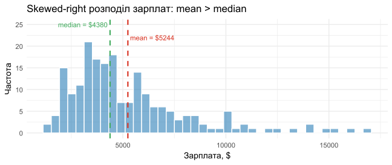
🧩 Сюжет
Частка спаму
\(P(S)\) 0.20
Чутливість (true positive)
\(P(+\mid S)\) 0.95
False positive
\(P(+\mid \bar{S})\) 0.08
Запитання:
\(P(+)\) через закон повної ймовірності; (b) \(P(S \mid +)\) за Баєсом; (c) перевірити твердження сусіда; (d) очікувані числа з 50 листів.
<- 0.20 ; prior_ns <- 0.80 <- 0.95 ; fpr <- 0.08
✅ P1(a) — \(P(+)\) (закон повної ймовірності)
\[
P(+) = P(+\mid S)P(S) + P(+\mid \bar{S})P(\bar{S})
\]
\[
= 0.95 \cdot 0.20 + 0.08 \cdot 0.80
= 0.19 + 0.064 = \boxed{0.254}.
\]
<- sens * prior_s + fpr * prior_ns; p_pos
Закон повної ймовірності — крок 1 для Bayes. Завжди розбиваємо \(P(+)\) на дві гілки: «спам + флаг» і «не спам + флаг». Структура: пріор × правдоподібність, додати по всіх класах. Майже та сама схема, що в A9.
✅ P1(b) — \(P(S \mid +)\) (Баєс)
\[
P(S \mid +) = \frac{P(+\mid S)\,P(S)}{P(+)}
= \frac{0.95 \cdot 0.20}{0.254}
= \frac{0.19}{0.254}
\]
\[
\approx \boxed{0.748}.
\]
Тобто ≈ 75% позначених листів дійсно спам.
Baes у мнемонічній формі: \(\text{posterior} = \frac{\text{likelihood} \times \text{prior}}{\text{normalizer}}\) . Тут base rate спаму 20%, але після спостереження «+» вона зросла до 75%. Підкреслити: гарна модель оновлює наше переконання.
✅ P1(c) — оцінка твердження сусіда
Сусід: «Якщо фільтр зловив — точно спам».
Це хибно : \(P(S \mid +) = 0.748\) , не 1. Один з кожних 4 позначених листів — насправді легітимний (false positive).
Чому: легітимних листів 4× більше (80% vs 20%), тож навіть 8% помилкових прапорів дають значний абсолютний внесок: 0.064 проти 0.19.
Завжди перевіряйте папку «Спам» — там близько 25% не спаму!
\(P(+ | S) = 0.95\) — це чутливість (sensitivity, recall); \(P(S | +) = 0.748\) — це precision . У ML це різні метрики. Поплутати їх — класична помилка. Якщо клас рідкісний, навіть «гарна» модель дає багато false positives.
✅ P1(d) — очікувані числа з 50 листів
Очікувано спаму:
\[
E[\#\text{spam}] = 50 \cdot 0.20 = 10.
\]
З них фільтр правильно позначає:
\[
E[\#\text{true positive}] = 10 \cdot 0.95 = 9.5 \approx 9{-}10.
\]
50 * prior_s; 50 * prior_s * sens
Лінійність сподівання: \(E[\text{спам у 50}] = 50 \cdot P(S)\) . Працює навіть якщо листи залежні. Це підготовка до Bin(50, 0.2) у наступних задачах. Підкреслити, що очікуване число — це середнє по багатьох днях, не гарантія на конкретний день.
📊 P1 — 1000 листів
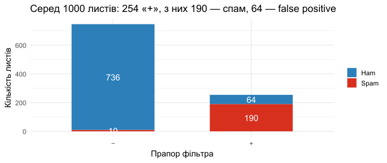
🧩 Сюжет
Дохідність \(r\)
\(-40\%\) \(+5\%\) \(+60\%\)
\(P(R = r)\) 0.50
0.30
0.20
валідність розподілу; (b) \(E[R]\) ; (c) \(\operatorname{Var}(R), \operatorname{SD}(R)\) ; (d) портфель $500.
<- c (- 0.40 , 0.05 , 0.60 )<- c (0.50 , 0.30 , 0.20 )
✅ P2(a) — валідність
Невід’ємність: \(0.50, 0.30, 0.20 \ge 0\) ✓
Сума: \(0.50 + 0.30 + 0.20 = 1.00\) ✓
Дві умови — як у Section C, але тут дискретний фінансовий сценарій. Корисний момент: усі три ймовірності цілком ненульові, тому всі сценарії «живі». Підготовка до обчислення моментів.
✅ P2(b) — \(E[R]\)
\[
E[R] = -0.40 \cdot 0.50 + 0.05 \cdot 0.30 + 0.60 \cdot 0.20
\]
\[
= -0.20 + 0.015 + 0.12 = \boxed{-0.065 = -6.5\%}.
\]
Висновок: очікувана дохідність від’ємна → це погана «інвестиція», в середньому втрачаємо 6.5% капіталу на місяць.
Базова формула: \(E[R] = \sum r_i p_i\) . Підкреслити: «найімовірніший» сценарій (rug pull, 50%) ще не визначає \(E[R]\) повністю — треба зважити всі. Корисно нагадати про expected utility як критерій рішень.
✅ P2(c) — \(\operatorname{Var}(R), \operatorname{SD}(R)\)
\[
E[R^2] = (-0.40)^2 \cdot 0.50 + (0.05)^2 \cdot 0.30 + (0.60)^2 \cdot 0.20
\]
\[
= 0.080 + 0.00075 + 0.072 = 0.15275.
\]
\[
\operatorname{Var}(R) = E[R^2] - (E[R])^2 = 0.15275 - 0.004225 = 0.148525.
\]
\[
\operatorname{SD}(R) = \sqrt{0.148525} \approx 0.3854 = 38.5\%.
\]
SD \(\approx 39\%\) — гігантська волатильність порівняно з середнім \(-6.5\%\) . Сценарій більше «казино», ніж інвестиція.
<- sum (r^ 2 * p) - ER^ 2 c (Var = VarR, SD = sqrt (VarR))
Var SD
0.1485250 0.3853894
Формула \(\operatorname{Var}(R) = E[R^2] - (E[R])^2\) — основна. Підкреслити, що \(E[R^2] \ne (E[R])^2\) , інакше дисперсія = 0. Зв’язок із Sharpe ratio: \(E[R] / \operatorname{SD}(R)\) тут від’ємне — інвестори втікають.
✅ P2(d) — портфель $500
Портфель \(V = 500 \cdot (1 + R)\) , тобто \(V = 500 + 500 R\) .
\[
E[V] = 500 + 500 \cdot E[R] = 500 + 500 \cdot (-0.065) = 500 - 32.50 = \boxed{\$467.50}.
\]
\[
\operatorname{SD}(V) = 500 \cdot \operatorname{SD}(R) \approx 500 \cdot 0.3854 \approx \boxed{\$192.7}.
\]
<- 500 * (1 + ER); SDV <- 500 * sqrt (VarR)c (E_V = EV, SD_V = SDV)
E_V SD_V
467.5000 192.6947
Лінійні перетворення моментів: \(E[aR + b] = aE[R] + b\) , \(\operatorname{Var}(aR + b) = a^2 \operatorname{Var}(R)\) , \(\operatorname{SD}(aR + b) = |a| \operatorname{SD}(R)\) . Аналог A2, тільки на практиці. Корисно зробити паралель.
📊 P2 — розподіл портфеля
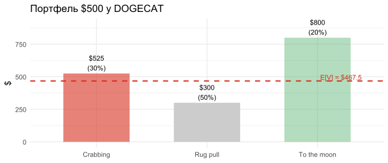
Problem 3 — Sleepy Barista
🧩 Сюжет
\(X \sim \mathrm{Binomial}(n = 10, p = 0.12)\) — к-сть неправильних замовлень.
\(P(X = 0)\) ; (b) \(P(X \ge 2)\) ; (c) \(E[X], \operatorname{Var}(X)\) ; (d) \(P(X > 2)\) .
✅ P3(a) — \(P(X = 0)\)
\[
P(X = 0) = \binom{10}{0}(0.12)^0(0.88)^{10} = 0.88^{10}.
\]
\[
0.88^{10} \approx \boxed{0.2785}.
\]
Найпростіший випадок Binomial: всі провали. \(P(X = 0) = (1-p)^n\) . Студенти часто пишуть \(\binom{n}{0} \cdot p^0\) , що = 1, забуваючи \(0! = 1\) . Швидше — одразу \((1-p)^n\) .
✅ P3(b) — \(P(X \ge 2)\) через доповнення
\[
P(X \ge 2) = 1 - P(X = 0) - P(X = 1).
\]
\[
P(X = 1) = \binom{10}{1}(0.12)(0.88)^9 = 10 \cdot 0.12 \cdot 0.88^9
\approx 0.3798.
\]
\[
P(X \ge 2) = 1 - 0.2785 - 0.3798 \approx \boxed{0.3417}.
\]
1 - pbinom (1 , 10 , 0.12 ) # 0.3417
Стратегія «доповнення»: коли треба \(P(X \ge k)\) і \(k\) мале — рахуй \(1 - P(X \le k-1)\) . У R: 1 - pbinom(k-1, n, p) або pbinom(k-1, n, p, lower.tail = FALSE). Запам’ятати: pbinom приймає верхню межу \(\le\) .
✅ P3(c) — \(E[X], \operatorname{Var}(X)\)
\[
E[X] = np = 10 \cdot 0.12 = 1.2.
\]
\[
\operatorname{Var}(X) = np(1 - p) = 10 \cdot 0.12 \cdot 0.88 = 1.056.
\]
Інтерпретація \(E[X]\) : у середньому за зміну з 10 замовлень буде 1.2 неправильних — приблизно одне.
c (E_X = 10 * 0.12 , Var_X = 10 * 0.12 * 0.88 )
Формули \(np\) і \(np(1-p)\) — святе для Binomial. Підкреслити: \(E[X]\) може бути нецілим (1.2), хоч \(X\) завжди ціле. Це особливість сподівання — воно «середнє по всіх можливих світах».
✅ P3(d) — \(P(X > 2)\) (втручання)
\[
P(X > 2) = P(X \ge 3) = 1 - P(X \le 2).
\]
1 - pbinom (2 , 10 , 0.12 ) # 0.1087
\[
\approx \boxed{0.1087 = 10.87\%}.
\]
Менеджер втручатиметься приблизно у 1 з 9 змін.
Уважно: \(P(X > 2) = P(X \ge 3)\) бо \(X\) ціле. Тому 1 - pbinom(2, ...), а НЕ 1 - pbinom(3, ...). Це найчастіша помилка у задачах із Binomial: плутанина \(>\) vs \(\ge\) .
Problem 4 — Normal: Streams
🧩 Сюжет
\(X \sim \mathcal{N}(\mu = 12\,000, \sigma = 3\,200)\) .
\(P(X > 17\,000)\) ; (b) 90-й перцентиль (\(z_{0.9} \approx 1.28\) ); (c) \(P(8\,000 < X < 15\,200)\) .
✅ P4(a) — \(P(X > 17\,000)\)
\[
z = \frac{17\,000 - 12\,000}{3\,200} = \frac{5\,000}{3\,200} = 1.5625.
\]
\[
P(X > 17\,000) = 1 - \Phi(1.5625) \approx 1 - 0.9410 = \boxed{0.0590}.
\]
≈ 5.9% пісень отримують понад 17 тис. стрімів.
1 - pnorm (17000 , 12000 , 3200 )
Шаблон \(z\) -перетворення: \(z = (x - \mu) / \sigma\) . Потім дивимось у таблицю \(\Phi(z)\) або використовуємо R. Корисно нагадати: \(\Phi(1.56) \approx 0.94\) — типове значення з таблиці.
✅ P4(b) — 90-й перцентиль
\[
x_{0.9} = \mu + z_{0.9} \cdot \sigma = 12\,000 + 1.28 \cdot 3\,200
\]
\[
= 12\,000 + 4\,096 = \boxed{16\,096}.
\]
10% найкращих пісень отримують щонайменше 16 100 стрімів на день.
Обернений шлях: \(x = \mu + z \cdot \sigma\) . Ключові квантилі для запам’ятовування: \(z_{0.90} \approx 1.28\) , \(z_{0.95} \approx 1.645\) , \(z_{0.975} \approx 1.96\) . Це фундамент довірчих інтервалів у Stat-2.
✅ P4(c) — \(P(8\,000 < X < 15\,200)\)
\[
z_1 = \frac{8\,000 - 12\,000}{3\,200} = -1.25, \quad z_2 = \frac{15\,200 - 12\,000}{3\,200} = 1.
\]
\[
P = \Phi(1) - \Phi(-1.25) = 0.8413 - 0.1056 = \boxed{0.7357}.
\]
pnorm (15200 , 12000 , 3200 ) - pnorm (8000 , 12000 , 3200 )
Двосторонній інтервал: \(\Phi(z_2) - \Phi(z_1)\) . Корисна перевірка: тут \(z_1 = -1.25, z_2 = +1\) — асиметричні, тому це не правило \(\mu \pm \sigma\) і не \(\mu \pm 2\sigma\) . Студенти часто намагаються відразу застосувати готове правило.
📊 P4 — візуалізація
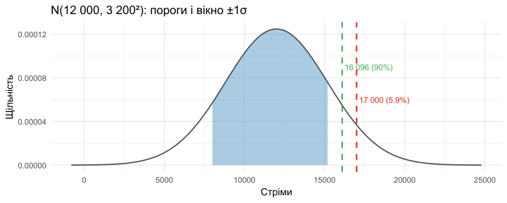
Problem 5 — Exponential: Delivery
🧩 Сюжет
\(T \sim \mathrm{Exp}(\lambda)\) , \(E[T] = 1/\lambda = 20\) хв, тобто \(\lambda = 0.05\) .
\(E[T], \operatorname{Var}(T)\) ; (b) \(P(T > 30)\) ; (c) \(P(10 < T < 40)\) ; (d) memoryless.
✅ P5(a) — \(E[T], \operatorname{Var}(T)\)
\[
E[T] = \frac{1}{\lambda} = 20 \text{ хв}.
\]
\[
\operatorname{Var}(T) = \frac{1}{\lambda^2} = 400 \text{ хв}^2, \quad \operatorname{SD}(T) = 20 \text{ хв}.
\]
Цікаво: для Exp \(\operatorname{SD} = E[T]\)
Запам’ятати: для Exp параметр \(\lambda\) — це інтенсивність (events per unit time), а \(1/\lambda\) — середній час між подіями . Часто плутають: задано «20 хв» → \(\lambda = 1/20\) , а не \(\lambda = 20\) .
✅ P5(b) — \(P(T > 30)\)
\[
P(T > 30) = e^{-\lambda \cdot 30} = e^{-30/20} = e^{-1.5}
\]
\[
\approx \boxed{0.2231}.
\]
1 - pexp (30 , 1 / 20 ) # 0.2231
Survivor function \(e^{-\lambda t}\) дає миттєву відповідь без R: \(e^{-1.5} \approx 0.22\) . Корисний трюк для іспиту, коли калькулятор не дозволено. Зв’язок із D3(a) — те саме обчислення.
✅ P5(c) — \(P(10 < T < 40)\)
\[
P(10 < T < 40) = e^{-10/20} - e^{-40/20} = e^{-0.5} - e^{-2}
\]
\[
\approx 0.6065 - 0.1353 = \boxed{0.4712}.
\]
pexp (40 , 1 / 20 ) - pexp (10 , 1 / 20 )
Через survivors: \(S(10) - S(40) = e^{-0.5} - e^{-2}\) . Підкреслити: однаково, чи писати через pexp (CDF), чи через \(1 - F\) . Це додає впевненості при перевірці.
✅ P5(d) — memoryless property
\[
P(T > 30 \mid T > 20) = P(T > 10) = e^{-10/20} = e^{-0.5} \approx 0.6065.
\]
Інтерпретація: факт того, що студент уже прочекав 20 хв, не дає жодної інформації про те, скільки ще доведеться чекати. Розподіл «забуває» минуле.
Чекання попередніх 20 хв не наближає доставку — інтуїція «зараз має приїхати» хибна для Exp.
# Перевірка: ці дві мають бути рівні 1 - pexp (30 , 1 / 20 )) / (1 - pexp (20 , 1 / 20 )) # P(T>30 | T>20) 1 - pexp (10 , 1 / 20 ) # P(T>10)
Ключовий слайд про Exp. Підкреслити: memoryless — це функціональне рівняння , тільки Exp (серед неперервних) йому задовольняє. Аналог у дискретному світі — geometric. Розгорнути на дошці: \(P(T > s+t)/P(T>s) = P(T>t)\) через експоненту.
Problem 6 — Markov Inequality
🧩 Сюжет
\(T \ge 0\) — чайові кур’єра (UAH). Відомо лише \(E[T] = 180\) .
сформулювати Маркова; знайти верхню межу для \(P(T \ge 900)\) ;
перевірити «не більше 15% шансу заробити > 1200»;
описати розподіл, на якому межа Маркова точна .
✅ P6(a) — Маркова
Умови: \(X \ge 0\) , \(E[X] < \infty\) , \(a > 0\) .
Формула:
\[
P(X \ge a) \le \frac{E[X]}{a}.
\]
Застосування при \(a = 900\) :
\[
P(T \ge 900) \le \frac{180}{900} = 0.20 = \boxed{20\%}.
\]
Завжди починати з умов: \(X \ge 0\) , \(E[X] < \infty\) . Маркова — це верхня межа , не точне значення. Підкреслити: знак \(\le\) , не \(=\) . Це часта помилка — писати «дорівнює 20%».
✅ P6(b) — твердження друга
Друг каже: «не більше 15% шансу \(T > 1200\) ».
Маркова дає:
\[
P(T \ge 1200) \le \frac{180}{1200} = 0.15 = 15\%.
\]
Маркова не доводить, що ймовірність дорівнює 15% — це лише верхня межа . Тобто 15% — це найгірший випадок . Твердження друга — правильне за змістом (як верхня оцінка), і збігається з границею Маркова, тож «not too strong» — він використав саме Markov bound.
Реальна ймовірність може бути значно меншою (наприклад, 5% або навіть 0%), але точно не вище 15% .
Тонкий момент: твердження «не більше 15%» — це САМЕ те, що каже Маркова. Тобто друг не помилився, але й нічого нового не сказав. На іспиті розмежувати «істина» vs «строге твердження».
✅ P6(c) — коли Маркова точна
Межа досягається, коли вся маса зосереджена в двох точках : 0 та \(a\) .
Конкретно:
\[
P(T = 900) = \frac{180}{900} = 0.20, \quad P(T = 0) = 0.80.
\]
Перевірка: \(E[T] = 0 \cdot 0.8 + 900 \cdot 0.2 = 180\) ✓, \(P(T \ge 900) = 0.20\) — точно межа.
Урок: Маркова груба для розподілів із багатою структурою, але точна для двозначкових розподілів. Тому її майже завжди можна суттєво поліпшити, якщо знати \(\operatorname{Var}\) (нерівність Чебишева).
# Простий приклад: Bernoulli-подібна T з масами в 0 і 900 <- c (0 , 900 ); T_p <- c (0.8 , 0.2 )sum (T_vals * T_p) # E[T] = 180 sum (T_p[T_vals >= 900 ]) # P(T >= 900) = 0.20 — точно як Markov
Цей слайд про тіснотну межі. Маркова досягається лише на «екстремальному» розподілі — двозначковому. Усі реалістичні розподіли роблять межу набагато гіршою. Зв’язок із B7 і A4.
Problem 7 — CLT: Sleep Hours
🧩 Сюжет
\(\mu = 5.8\) год, \(\sigma = 1.2\) год, \(n = 36\) , розподіл невідомий.
розподіл \(\bar X\) , теорема, \(E[\bar X], \operatorname{Var}(\bar X)\) ;
\(P(\bar X < 5.5)\) ;\(c\) : \(P(\bar X > c) = 0.05\) (\(z_{0.95} \approx 1.645\) ).
✅ P7(a) — розподіл \(\bar X\) (CLT)
За Центральною граничною теоремою (бо \(n = 36 \ge 30\) ):
\[
\bar X \overset{\text{прибл.}}{\sim} \mathcal{N}\!\left(\mu,\ \frac{\sigma^2}{n}\right).
\]
\[
E[\bar X] = \mu = 5.8,
\]
\[
\operatorname{Var}(\bar X) = \frac{\sigma^2}{n} = \frac{1.44}{36} = 0.04, \quad \operatorname{SE}(\bar X) = 0.2.
\]
\[
\boxed{\bar X \overset{\text{прибл.}}{\sim} \mathcal{N}(5.8,\ 0.2^2)}.
\]
Дуже важливий слайд. Дві ключові ідеї: (1) розподіл невідомий , але завдяки CLT нам байдуже; (2) дисперсія середнього у \(n\) разів МЕНША за дисперсію окремого спостереження. Зв’язок із A7, B5.
✅ P7(b) — \(P(\bar X < 5.5)\)
\[
z = \frac{5.5 - 5.8}{0.2} = -1.5.
\]
\[
P(\bar X < 5.5) = \Phi(-1.5) = 1 - 0.9332 = \boxed{0.0668}.
\]
≈ 6.7% ймовірність того, що середній сон у виборі з 36 студентів нижче 5.5 год .
pnorm (5.5 , mean = 5.8 , sd = 0.2 )
Використовуємо SE = 0.2, не \(\sigma\) = 1.2. Це найчастіша помилка в CLT-задачах: підставити \(\sigma\) замість \(\sigma/\sqrt{n}\) . Підкреслити: для \(\bar X\) масштаб менший — тому навіть «помірне» відхилення \(-0.3\) дає \(z = -1.5\) .
✅ P7(c) — поріг \(c\) для верхніх 5%
\[
c = \mu + z_{0.95} \cdot \operatorname{SE} = 5.8 + 1.645 \cdot 0.2
\]
\[
= 5.8 + 0.329 = \boxed{6.129}.
\]
Інтерпретація: лише в 5% вибірок із 36 студентів середній сон перевищить 6.13 год .
qnorm (0.95 , mean = 5.8 , sd = 0.2 )
Шаблон: \(c = \mu + z_{1-\alpha} \cdot \text{SE}\) . Це підготовка до довірчих інтервалів: \(\bar x \pm z_{1-\alpha/2} \cdot \text{SE}\) . Запам’ятати \(z_{0.95} = 1.645\) і \(z_{0.975} = 1.96\) .
Problem 8 — Joint XY: Study vs Game
🧩 Сюжет
\(X = 1\) 0.05
0.15
0.10
\(X = 3\) 0.10
0.25
0.15
\(X = 6\) 0.15
0.05
0.00
<- matrix (c (0.05 , 0.15 , 0.10 ,0.10 , 0.25 , 0.15 ,0.15 , 0.05 , 0.00 ),nrow = 3 , byrow = TRUE ,dimnames = list (X = c (1 , 3 , 6 ), Y = c (0 , 2 , 4 )))sum (joint) # перевірка нормування
✅ P8(a) — маргінали
За рядками (\(X\) ):
\[
P(X=1) = 0.30, \quad P(X=3) = 0.50, \quad P(X=6) = 0.20.
\]
За стовпцями (\(Y\) ):
\[
P(Y=0) = 0.30, \quad P(Y=2) = 0.45, \quad P(Y=4) = 0.25.
\]
<- rowSums (joint); py <- colSums (joint)
Маргінали = суми рядків/стовпців. Завжди першим ділом — отримати \(p_X, p_Y\) зі спільної. Перевірка: суми обох мають = 1. У R: rowSums для \(p_X\) , colSums для \(p_Y\) .
✅ P8(b) — \(E[X], E[Y]\)
\[
E[X] = 1 \cdot 0.30 + 3 \cdot 0.50 + 6 \cdot 0.20 = 0.3 + 1.5 + 1.2 = 3.0.
\]
\[
E[Y] = 0 \cdot 0.30 + 2 \cdot 0.45 + 4 \cdot 0.25 = 0 + 0.90 + 1.00 = 1.9.
\]
<- sum (as.numeric (names (px)) * px)<- sum (as.numeric (names (py)) * py)c (EX = EX, EY = EY)
\(E[X]\) обчислюється з маргіналу \(p_X\) — не з усієї матриці. Тобто значення \(Y\) не впливає на \(E[X]\) (і навпаки). Це базовий тест: чи студент розуміє, що сподівання — характеристика однієї змінної.
✅ P8(c) — незалежність?
Перевіримо в одній клітинці: чи \(P(X=1, Y=0) = P(X=1) P(Y=0)\) ?
\[
P(X=1)P(Y=0) = 0.30 \cdot 0.30 = 0.09.
\]
\[
P(X=1, Y=0) = 0.05 \neq 0.09.
\]
Не незалежні. Інтуїтивно: хто вчиться більше, той менше грає — клітинка (\(X=6, Y=4\) ) має ймовірність 0 .
Тест на незалежність: \(P(X, Y) = P(X) \cdot P(Y)\) для кожної клітинки. Достатньо знайти одну клітинку, де це порушено — і вже не незалежні. Контрприклад зазвичай у нулях, як тут.
✅ P8(d) — \(\operatorname{Cov}(X, Y)\)
\[
E[XY] = \sum_{x, y} xy \cdot P(x, y).
\]
<- c (1 , 3 , 6 ); ys <- c (0 , 2 , 4 )<- sum (outer (xs, ys) * joint)# 4.9 <- EXY - EX * EY# -0.80
\[
E[XY] = 4.9, \quad \operatorname{Cov}(X, Y) = 4.9 - 3.0 \cdot 1.9 = 4.9 - 5.7 = \boxed{-0.80}.
\]
Знак: від’ємний → ті, хто більше вчаться, грають менше (та навпаки). Має економічний сенс: час обмежений.
Формула \(\operatorname{Cov} = E[XY] - E[X]E[Y]\) — стандартна. \(E[XY]\) = сума \(x_i y_j p_{ij}\) по всіх клітинках. Це подвійна сума, на відміну від маргінальних. Зв’язок із B2: \(\operatorname{Cov} \ne 0\) → залежні (а назад — ні).
📊 P8 — теплова мапа
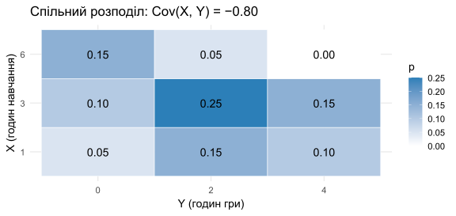
Problem 9 — Sample Covariance & Correlation
🧩 Сюжет
\(n = 25\) , \(\bar X = 2.8\) кав/день, \(\bar Y = 64.0\) балів, \(S_X = 1.1\) , \(S_Y = 12.5\) , \(\sum_{i=1}^{25} (X_i - \bar X)(Y_i - \bar Y) = 154.0\) .
\(S_{XY}\) ; (b) \(r_{XY}\) ; (c) інтерпретація; (d) каузальність.
✅ P9(a) — sample covariance
\[
S_{XY} = \frac{1}{n - 1}\sum_{i=1}^n (X_i - \bar X)(Y_i - \bar Y)
= \frac{154.0}{24}
\]
\[
\approx \boxed{6.4167}.
\]
<- 154 / (25 - 1 ); S_XY
Важливо: ділимо на \(n - 1\) , не \(n\) (Bessel’s correction). Це робить оцінку незміщеною . У R: cov() за замовчуванням використовує \(n - 1\) . Студенти часто плутають із дисперсією популяції.
✅ P9(b) — sample correlation
\[
r_{XY} = \frac{S_{XY}}{S_X \cdot S_Y} = \frac{6.4167}{1.1 \cdot 12.5} = \frac{6.4167}{13.75}
\]
\[
\approx \boxed{0.467}.
\]
<- S_XY / (1.1 * 12.5 ); r_XY
\(r\) — це нормалізована коваріація. Знаменник \(S_X \cdot S_Y\) робить її безрозмірною і обмеженою в \([-1, 1]\) . На відміну від \(S_{XY}\) (6.4 у дивних одиницях), \(r\) можна порівнювати між різними дослідженнями.
✅ P9(c) — інтерпретація
Знак: додатній — більше кави корелює з вищою само-оцінкою продуктивності.
Величина: \(|r| \approx 0.47\) — помірний лінійний зв’язок (не слабкий, не сильний).
Категоризація (умовна):
0.0–0.2
дуже слабкий
0.2–0.4
слабкий
0.4–0.6 помірний ← наш випадок
0.6–0.8
сильний
0.8–1.0
дуже сильний
Шкала умовна — у різних науках різні стандарти. У психології 0.3 вже вважається сильним, у фізиці 0.95 — слабкий. Підкреслити: завжди питай контекст. Зв’язок із A8 (порівняння \(|\rho|\) ).
✅ P9(d) — кореляція ≠ причинність
Студент: «Більше кави спричиняє вищу продуктивність».
Хиба: \(r = 0.47\) показує лише лінійну асоціацію , не каузальність .
Можливі альтернативні пояснення:
Зворотна каузальність: більш мотивовані/продуктивні люди п’ють більше кави.Сторонній фактор (confounder): обидві змінні залежать від, скажімо, тиску дедлайнів — більше дедлайнів → більше кави і більше зусиль.Самооцінка ≠ продуктивність: \(Y\) — суб’єктивна оцінка, корелює радше з настроєм/ентузіазмом.
Для каузальних висновків потрібен експеримент (RCT) або принаймні квазі-експериментальний дизайн.
Найважливіший слайд P9. Класична мантра: correlation does not imply causation . Назвати конкретні confounders — це показує, що студент розуміє, чому простий \(r\) не доводить причинності. Класичні приклади: морозиво vs утоплення (обоє від спеки).
Problem 10 — Casino Coin Flips
🧩 Сюжет
\(X_i = +100\) з \(p = 0.45\) , \(-100\) з \(p = 0.55\) .
\(E[X_i], \operatorname{Var}(X_i)\) ;\(S_{100}\) , теорема, нормальна апроксимація;\(P(S_{100} > 0)\) (hint: \(\sqrt{990\,000} \approx 995\) );LLN і чому «грати до перемоги» приречено.
✅ P10(a) — \(E[X_i], \operatorname{Var}(X_i)\)
\[
E[X_i] = 100 \cdot 0.45 + (-100) \cdot 0.55 = 45 - 55 = -10.
\]
\[
E[X_i^2] = 100^2 \cdot 0.45 + (-100)^2 \cdot 0.55 = 10\,000.
\]
\[
\operatorname{Var}(X_i) = 10\,000 - (-10)^2 = 10\,000 - 100 = 9\,900.
\]
\(E[X_i] = -\$10\) — математика на боці казино (експлуатує перевагу 0.55 vs 0.45).
Підкреслити: \(E[X_i^2] = 10\,000\) незалежно від \(p\) — це бо обидва результати рівні за модулем. Дисперсія майже = \(E[X_i^2]\) , бо середнє маленьке. Це гарний приклад, де середнє «мізерне» порівняно з SD.
✅ P10(b) — \(S_{100}\) і CLT
За незалежністю флипів:
\[
E[S_{100}] = 100 \cdot (-10) = -1\,000.
\]
\[
\operatorname{Var}(S_{100}) = 100 \cdot 9\,900 = 990\,000.
\]
\[
\operatorname{SD}(S_{100}) = \sqrt{990\,000} \approx 995.
\]
Теорема: Центральна гранична (CLT) → для \(n = 100\) можна апроксимувати:
\[
\boxed{S_{100} \overset{\text{прибл.}}{\sim} \mathcal{N}(-1\,000,\ 995^2)}.
\]
Адитивність: \(E[S_n] = n E[X]\) , \(\operatorname{Var}(S_n) = n \operatorname{Var}(X)\) — для незалежних. Але SD росте як \(\sqrt{n}\) , не \(n\) ! Це ключ до P10(d). Підкреслити: середнє «вирівнюється», сума — ні.
✅ P10(c) — \(P(S_{100} > 0)\)
\[
z = \frac{0 - (-1\,000)}{995} = \frac{1\,000}{995} \approx 1.005.
\]
\[
P(S_{100} > 0) = 1 - \Phi(1.005) \approx 1 - 0.8425 = \boxed{0.1575}.
\]
≈ 15.7% шанс закінчити «у плюсі» після 100 флипів.
1 - pnorm (0 , mean = - 1000 , sd = sqrt (990000 ))
15.7% — несподівано великий шанс! Через велику \(\sigma\) хвіст «розхлюпується» далеко. Це ілюструє, чому казино рекламують виграші: на коротких сесіях люди справді бувають у плюсі.
✅ P10(d) — LLN і безнадійна стратегія
Закон великих чисел:
\[
\bar X_n = \frac{S_n}{n} \xrightarrow{p} E[X_i] = -\$10.
\]
Тобто середній виграш на флип збігається до −10 $ .
Чому «грати до перемоги» приречено:
\(E[S_n] = -10n\) → лінійно зростає вниз із \(n\) .\(\operatorname{SD}(S_n) = 99.5 \sqrt{n}\) → росте, але повільніше (\(\sqrt{n}\) vs \(n\) ).Відношення сигнал/шум \(|E[S_n]| / \operatorname{SD}(S_n) = 10\sqrt{n}/99.5 \to \infty\) .
Тож \(P(S_n > 0) \to 0\) — чим довше граєш, тим меншою стає ймовірність вирівнятися.
LLN не дає «реваншу» — він гарантує збитки на дистанції. Це і є edge of the house .
Фінал курсу: розгорнутий приклад, де LLN + CLT діють разом. Підкреслити: «gambler’s fallacy» — переконання, що після серії програшів має наступити виграш. Насправді кожен флип незалежний, а очікування — мінус. Корисно зробити паузу для рефлексії.
📊 P10 — CLT vs симуляція
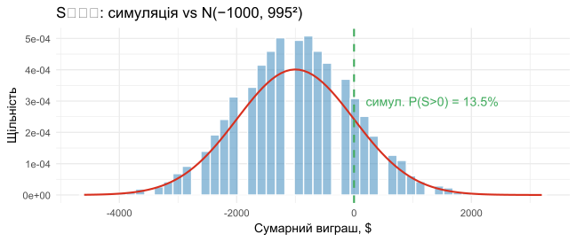
📊 P10 — LLN збіжність
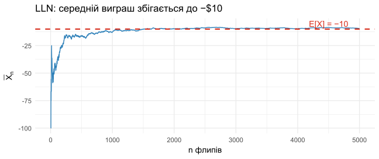